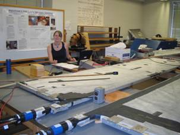
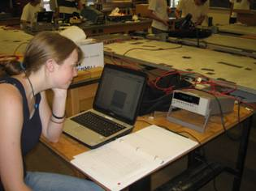

Summer
2005
The
focus of the summer of 2005 was on getting the “Big
Paddles” up and running. On route to their permanent
home at FermiLab as part of NuTev
, these large .8 by 3.5 meter scintillating panels took a
detour to the University of Rochester where they were fitted
out for operation.
The first step was to test PMTs (pdf)
and decide which ones to attach to the panels. Then, each
PMT needed to be attached to the panels in such a way that
the loss of light from the panel to the PMT was minimized,
which the students accomplished by making silicon cookies.
Each PMT also needed to be outfitted with high voltage bases.
Once all these parts were attached, the panels underwent light
leak testing, gamma testing, and efficiency testing. The results
from each restored panel (pdf)
were carefully mapped out.
Students
also worked on other projects (pdf).
One student explored the relationship between pressure and
muon rates. Two more students analyzed data from the MOLAR
Detector. These students also pressure calibrated many of
the DAQ boards used in classroom set-ups by the PARTICLE program.
Now, the boards can be used during the year to accurately
measure atmospheric pressure.
Several students working with Mr. Paul Conrow tried to develop
an aqueous scintillator (pdf)that
is sensitive to gamma rays.
Finally, before the Big Paddles were gone forever, and just
before the summer ended, the students explored the nature
of muon showers (pdf)
(wavefronts of muons that originated from the same collision
of a highly energetic cosmic ray and a molecule in the upper
atmosphere.) They arranged several of the large paddles into
an array looking for events when all the paddles were triggered
within a few nanoseconds of each other. Then, by analyzing
the timing of the events, the students could conclude which
events were actual wavefronts and which were simply unrelated
particles, and then could investigate the orientations of
these muon showers. Both a brief summary (doc)
and a detailed presentation (pdf)
of their results are available.
- Student Logs
- Silicon Cookie (pdf)
- Glue Testing (pdf)
- PMT Testing (pdf)
- Pressure Correlation (pdf)
|